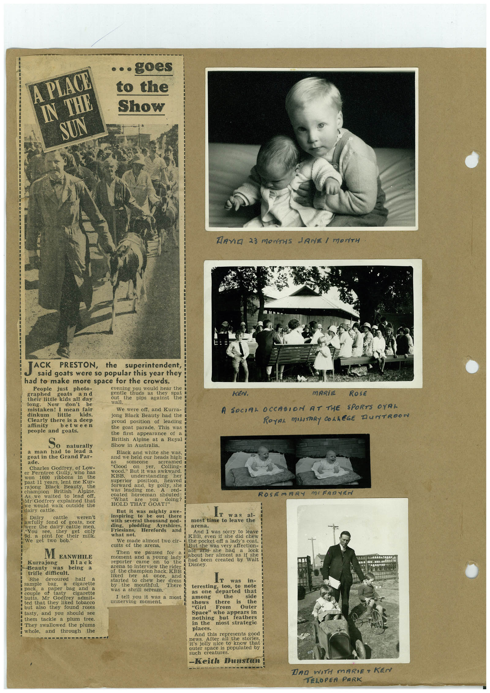

Book 1 · scan 118


Description
Transcription
Context
Review notes
Compare the machine draft with the scan. Handwriting and names need human review.
Artifacts
Edit the artifacts field in this note’s frontmatter to change these records. This summary is generated.
B01-S118-A01 — Newspaper clipping, Photo & Handwritten note — Book 1, scan 118
Types: Newspaper clipping, Photo, Handwritten note
Scope: Whole scanned page; individual items can be split out during review.
Caption: Not mapped yet.
Caption source: Not recorded yet.
Caption status: unmapped
Machine transcription
A PIACE. IN THE SUN • • • goes to the Show DAVID 23 MONTHS JANE I MONTH JACK PRESTON, the superintendent, said goats were so popular this year they had to make more space for the crowds. People just photo- evening you would hear the graphed goats and thuds as ther their little kids all day the spat pips against long. Now don't be wall. mistaken! I mean fair We were off, and Kurra- dinkum little kids. jong Black Beauty had the Clearly there is a deep proud position of leading affinity between people and goats. the goat parade. This was the first appearance of a So British Alpine at a Royal naturally Show in Australia. a man had to lead a Black and white she was, goat in the Grand Par- and we held our heads high ade. Charles Godfrey, of Low- as SO COU "Good on yer, Colling- er Ferntree Gully, who has wood." But it was awkward 1600 ribbons in the lent me Kur- superior Black Beauty. position, heaved British Alpine forward and, by golly, she to lead coated horseman shouted: Mr Godfrey explained that we would walk outside the "What HOLD THAT GOAT doing? But it was mighty Dairy cattle weren't oi goats, JUL I were the dairy cattle men. "You they get 9d. a pint for only their milk. We Doo inspiring to be out here was al- with several thousand nod- most time to leave the ding, plodding Friesians. Ayrshires, arena. Herefords and what net. And I was sorry to leave We made almost two cir- KBB, even she did chew i the pocket off a lady's coat. cuits of the arena. But she was very affection- MEANWHILE Kurrajong Beauty was Black being a trifle diffieult. She devoured 302. sample bag. cigarette couple paper and butts. cigarette Mr Godfrey admit- ted that they liked tobacco but also they found roses tasty, and you should see them tackle a plum tree. They swallowed the plums and through the Then we paused for a i ate ase see nad moment and a young lady about her almost as it she had been created by dona be arterview bue nee of the champion hack, KBE liked her started to chew once, and her dress There was a shrill scream. I tell you it was a most unnerving moment. Ir in- teresting, too, to as one departed note among the that Shows there "Girl From is side the Outer Space" whe appears in nothing but feathers most strategic places. And this represents good 3821S stories, outer space is populated by such creatures. -Keith Dunstan KEN. MARiE RosE A SOCIAL OCCASION AT THE SPORTS OYAL ROYAL MILITARY COLLEGE DUNTROON ROSEMARY MOFARTEN DAD WITH MARIE+ KEN TELOPER PARK